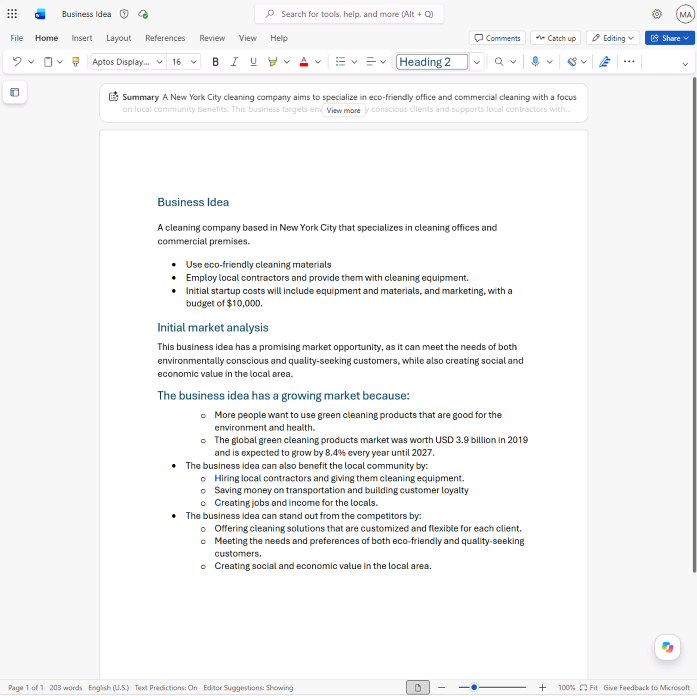
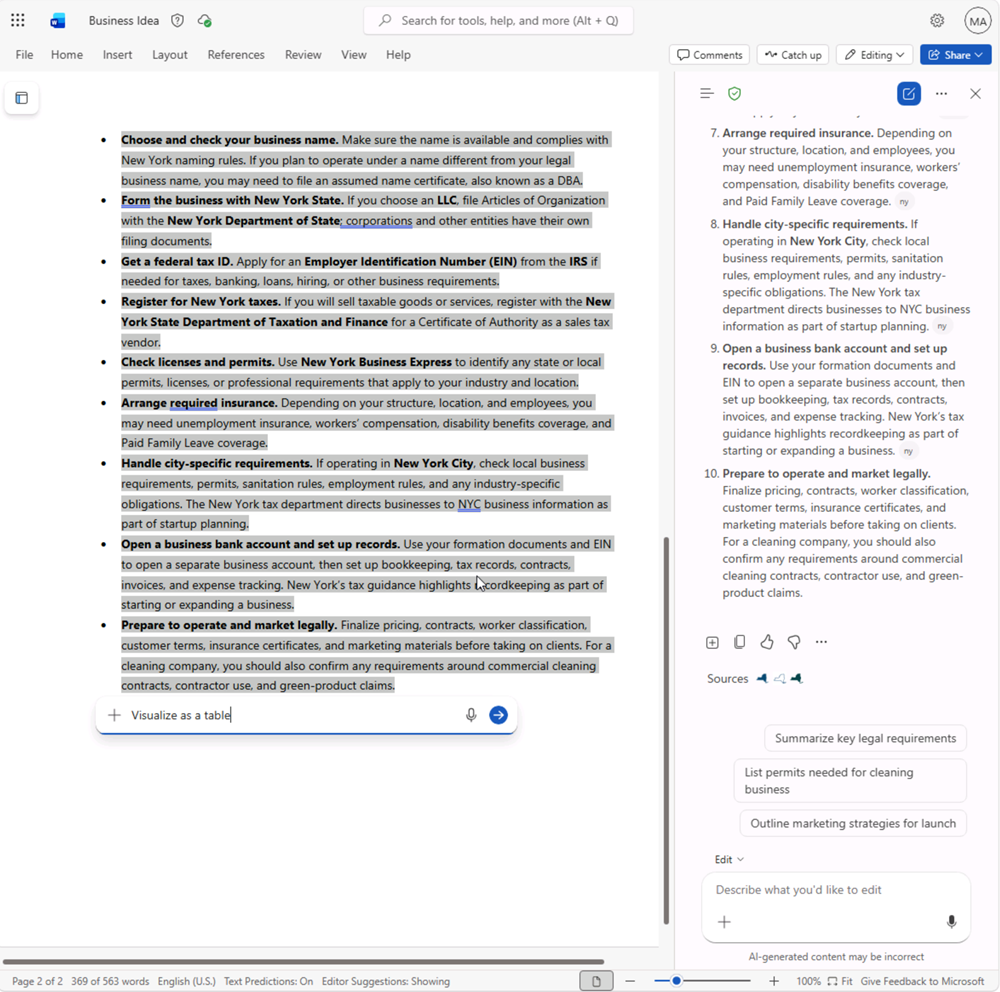
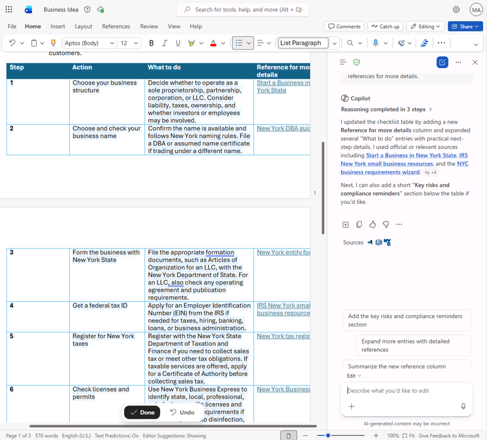
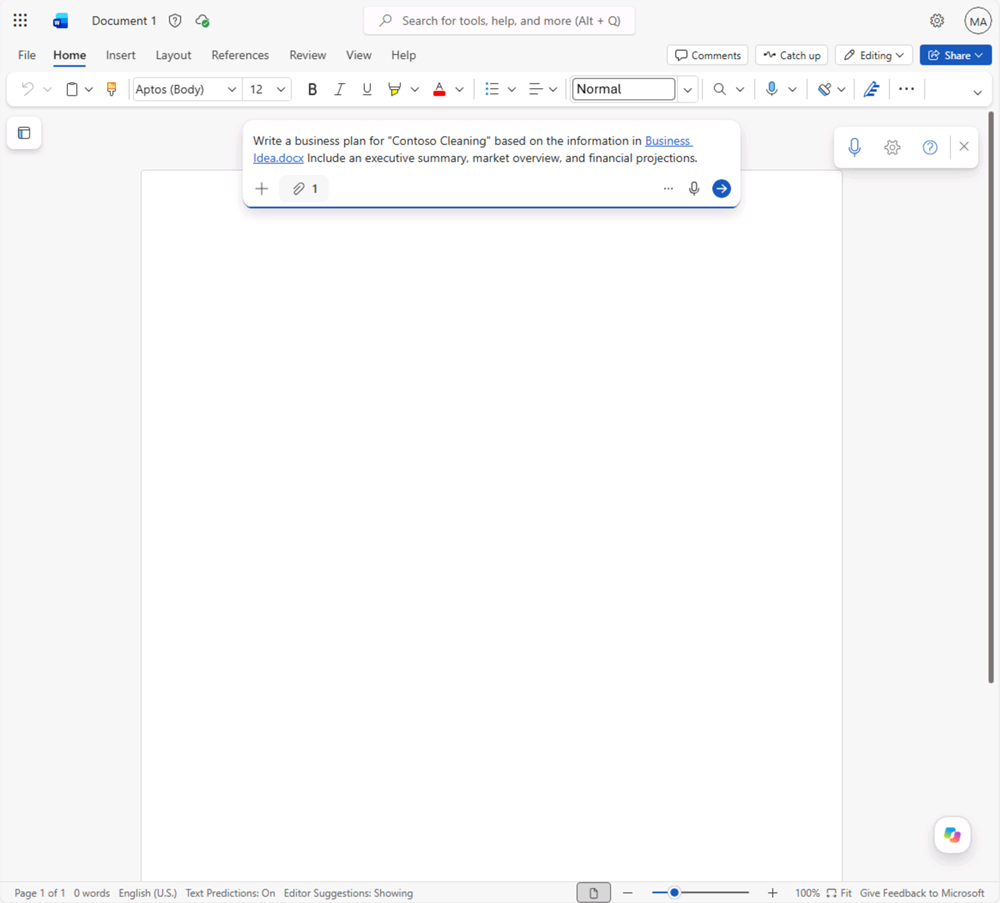
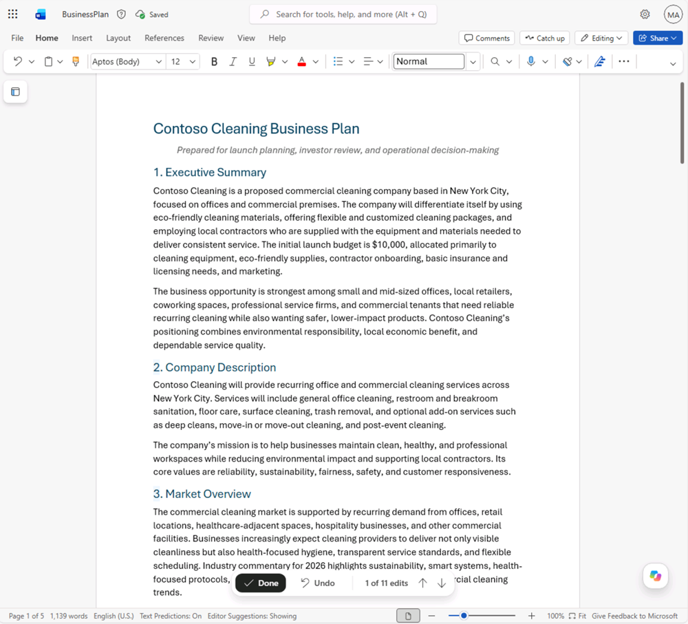
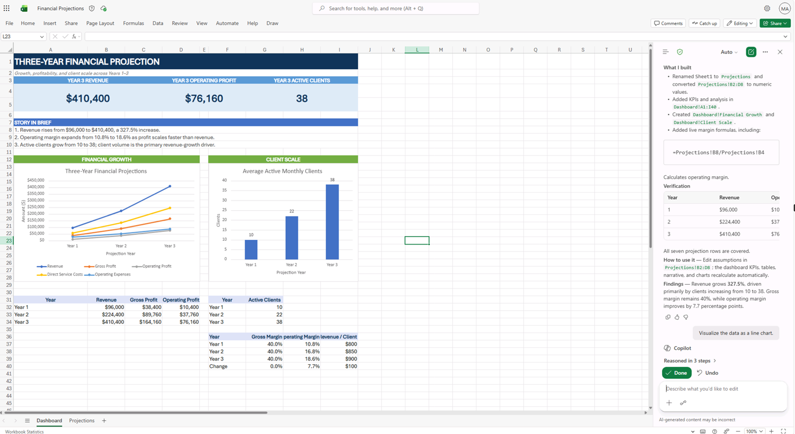
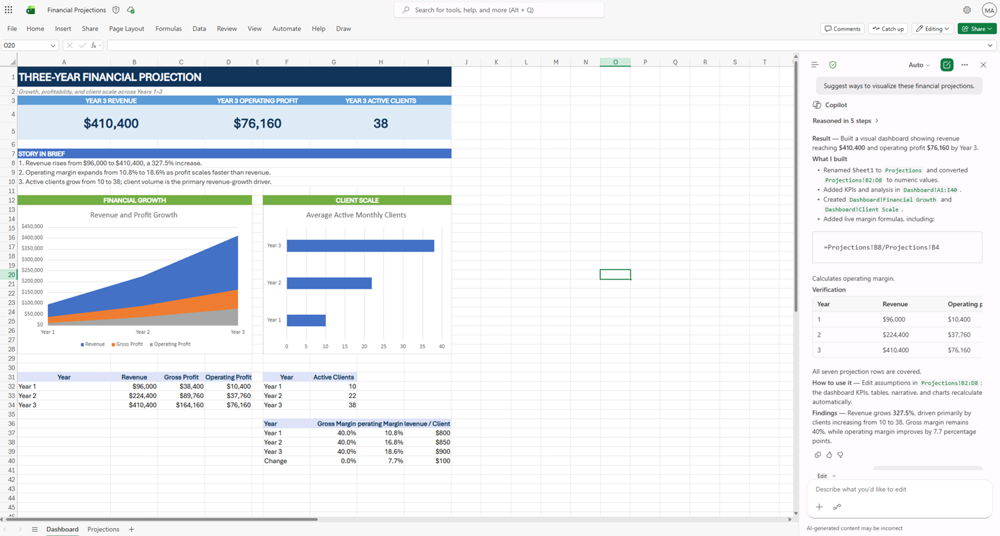
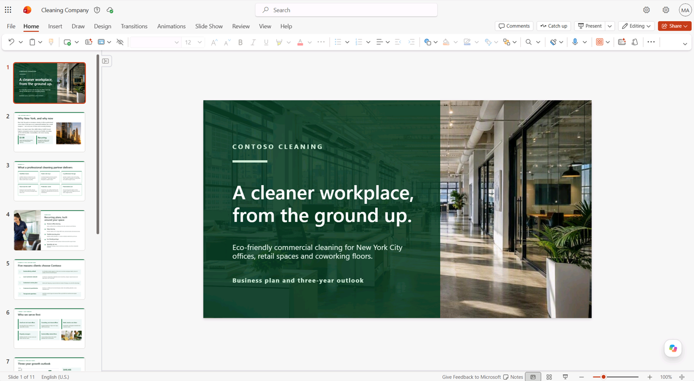
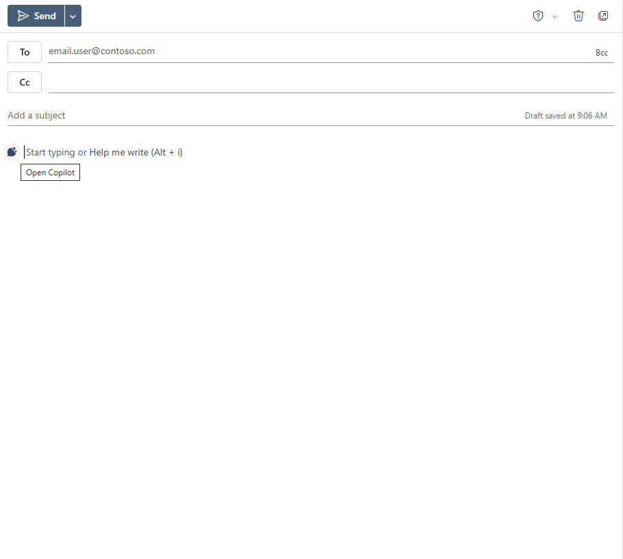
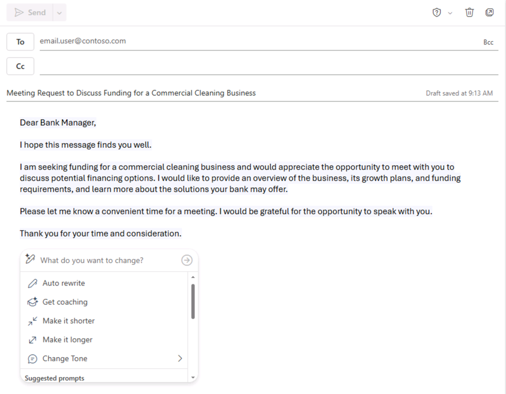

웹용 Microsoft 365 Copilot 실습
기업용 청소 회사를 창업한다고 상상해 봅니다. 웹용 Microsoft 365 앱의 Copilot으로 시장 동향을 조사하고 사업 계획서, 재무 시각화, 프레젠테이션, 투자 요청 이메일까지 만들어 봅니다.
이 문서는 Microsoft Learn 실습 랩 Explore Microsoft 365 Copilot on the web를 한국어로 옮기고 설명을 덧붙인 자료입니다. 원문 랩은 영어로만 제공됩니다.
웹용 Microsoft 365 앱은 화면이 빠르게 바뀝니다. 이 문서는 2026년 9월 기준이므로, 정확한 내용은 아래 원문 링크를 눌러 최신 상태로 확인해 주세요.
프롬프트와 입력값은 원문 그대로 옮겼으니 영어 표기 그대로 입력하시면 됩니다.
화면 이미지와 원문 내용의 저작권은 Microsoft에 있습니다.
이 실습의 프롬프트는 웹용 Microsoft 365 앱에서 Copilot을 탐색하는 출발점입니다. 프롬프트를 바꾸거나 직접 만든 프롬프트를 더해 Copilot과 주고받으며 결과를 다듬어 보세요. 실습 설명과 똑같은 결과가 나오지 않을 수 있지만 괜찮습니다. 핵심은 Copilot을 직접 실험해 보는 것입니다.
이 실습에는 Microsoft 365 Copilot 라이선스가 필요하고, 웹용 Microsoft 365 앱을 사용합니다. 생성형 AI의 특성상 받는 답변은 매번 조금씩 다를 수 있습니다.
웹 앱 시작하기
실습을 시작하기 전에 웹에서 Microsoft 365에 접근합니다. 다음 진입점 중 하나를 씁니다.
- 기본 포털 ·
https://m365.cloud.microsoft/ - 모든 앱 ·
https://m365.cloud.microsoft/apps/
다음 링크로 개별 앱에 바로 접근할 수도 있습니다.
- OneDrive ·
https://onedrive.cloud.microsoft/ - Word ·
https://word.cloud.microsoft/ - Excel ·
https://excel.cloud.microsoft/ - PowerPoint ·
https://powerpoint.cloud.microsoft/ - Outlook ·
https://outlook.office.com/
Word · 문서 조사와 아이디어 확장
생성형 AI 탐색을 시작하며, 웹용 Word의 Copilot으로 기존 문서를 살펴보고 통찰을 뽑아냅니다.
- 웹 브라우저에서
https://github.com/MicrosoftLearning/mslearn-copilot/raw/main/Allfiles/Business%20Idea.docx의 Business Idea.docx 문서를 엽니다. - 파일을 Downloads 폴더에 내려받습니다.
https://onedrive.cloud.microsoft/의 OneDrive로 이동해 + Create or upload → Files upload를 선택합니다. Downloads 폴더의 Business Idea.docx를 선택하고 Open을 선택해 업로드합니다.- Business Idea.docx를 웹용 Microsoft Word에서 엽니다. OneDrive에서 문서를 선택해 바로 열거나(환영 메시지나 새 기능 알림은 닫습니다),
https://word.cloud.microsoft/로 이동해 엽니다. 뉴욕시 청소 사업 아이디어를 개략적으로 담은 문서입니다. 보기 모드로 열리면 오른쪽 위의 Editing을 선택해 편집 모드로 바꿉니다.
Navigation 창이 열려 있으면 닫아서 문서를 더 넓게 볼 수 있습니다.
- Word 오른쪽 아래의 Copilot 아이콘을 찾아 선택해 Copilot 창을 엽니다. (테마에 따라 모양이 다를 수 있습니다.)

- Copilot 프롬프트 상자 위의 드롭다운이 Allow editing으로 설정됐는지 확인합니다.
- Copilot 창 아래쪽 입력란에 다음 프롬프트를 입력합니다.
- Copilot의 답변을 검토합니다. 문서의 핵심을 요약해 줍니다.

생성형 AI의 특성상 받는 답변은 조금씩 다를 수 있습니다. 궁금한 점이 더 있으면 구체적으로 이어서 물어봅니다.
- Copilot 창으로 돌아가 다음 질문을 입력합니다.
- 답변을 검토하고 필요하면 이어서 질문합니다. 만족스러우면 답변을 클립보드에 복사합니다. Word 문서의 기존 텍스트 뒤에 붙여 넣습니다. 그런 다음 뉴욕에서 사업을 시작할 때 할 일 목록 부분을 선택합니다. 나타나는 도구 모음에서 Edit with Copilot을 선택하고
Visualize as a table을 입력해 프롬프트를 전송합니다.

- 표를 검토하고 Copilot에게 열을 더 추가하도록 요청합니다. 예를 들어 자세한 정보를 담은 참조 열을 넣습니다. 답변은 다음과 비슷하게 나옵니다.

AI가 만든 답변은 웹의 공개 정보를 근거로 합니다. 사업 설립 절차를 이해하는 데는 도움이 되지만 100% 정확하다고 보장할 수 없으며, 전문가의 조언을 대신하지 않습니다.
- Copilot이 만든 표가 만족스러우면 Done을 선택해 변경 내용을 유지합니다.
Word · 사업 계획서 작성
초기 조사를 마쳤으니, 웹용 Word의 Copilot으로 청소 회사의 사업 계획서를 만듭니다.
- Business Idea.docx를 웹용 Word에서 연 상태로 Copilot 창에 다음 프롬프트를 입력합니다.
- 제안을 검토하고 청소 회사 이름을 하나 고릅니다. 마음에 드는 이름이 나올 때까지 계속 물어봐도 됩니다.
https://word.cloud.microsoft/로 이동해 Create blank document를 선택해 새 빈 문서를 만듭니다. 새 문서의 Copilot 초안 상자에 다음 프롬프트를 입력합니다.Contoso Cleaning은 앞에서 고른 회사 이름으로 바꿉니다.

프롬프트를 입력하다가 /를 입력하면 Copilot이 OneDrive의 문서(Business Idea.docx 포함)를 찾아 줍니다. 또는 프롬프트 상자 아래의 +를 선택해 OneDrive에서 문서를 고릅니다. 문서가 제안되지 않으면 OneDrive 색인이 아직 끝나지 않았을 수 있습니다. 이때는 프롬프트를 다음처럼 바꿉니다. Write a business plan for "Contoso Cleaning", a commercial cleaning business in New York. Include an executive summary, market overview, and financial projections.
- 답변을 생성하고 검토합니다. 사업 계획서가 만족스러울 때까지 Copilot과 계속 작업합니다. 어조를 바꾸거나 분량을 조정하거나 특정 부분을 다시 쓰게 할 수 있습니다. 제목과 스타일을 적절히 넣어 문서를 다듬습니다. 만족스러우면 Done을 선택하고 OneDrive 폴더에 Business Plan.docx로 저장합니다. 문서는 다음과 비슷하게 나옵니다.

Excel · 재무 전망 시각화
사업 계획서가 준비됐으니, 재무 전망 데이터를 웹용 Excel의 Copilot으로 시각화해 이메일이나 프레젠테이션에 넣을 수 있게 합니다.
- Business Plan 문서를 웹용 Word에서 연 상태로 Copilot 창을 엽니다.
- 사업 계획서에 예상 수익 표나 재무 전망이 이미 있으면 그 표를 클립보드에 복사합니다. 없으면 다음 프롬프트를 입력합니다.
- 예상 수익 표를 클립보드에 복사합니다.
https://excel.cloud.microsoft/의 웹용 Excel을 열고 새 빈 통합 문서를 만듭니다. 바로 Financial Projections.xlsx로 OneDrive 폴더에 저장합니다.- 수익 전망 표를 Excel에 붙여 넣고 표로 서식 지정합니다. 방법은 다음과 같습니다.
- 데이터 안의 셀을 선택합니다.
- Home을 선택하고 Styles에서 Format as Table을 선택합니다.
- 표 스타일을 고릅니다.
- Format As Table 대화 상자에서 My table has headers를 선택하고 OK를 선택합니다.
- 전망 표를 표로 서식 지정한 상태에서 Excel 오른쪽 아래의 Copilot 창을 엽니다. 프롬프트 상자 위 드롭다운이 Allow editing인지 확인하고 다음 프롬프트를 입력합니다.
- Copilot이 새 시트를 만들고 재무 전망을 시각화하는 차트를 추가합니다.

Copilot이 다른 형식을 제안하면 다음 후속 프롬프트를 입력합니다. Visualize the data as a line chart.
- 차트를 선택하고 Chart 탭을 선택해 스타일을 적용하거나 차트 종류를 바꿉니다. Copilot이 차트를 여러 개 만들었으면 각각에 반복합니다. 마무리하면 다음과 비슷해집니다.

- Excel 웹 탭을 닫습니다. 통합 문서는 자동으로 저장됩니다.
PowerPoint · 프레젠테이션 만들기
사업 계획서 초안과 재무 전망을 준비했으니, 웹용 PowerPoint로 사업의 이점을 전하는 프레젠테이션을 만듭니다.
https://powerpoint.cloud.microsoft/의 웹용 PowerPoint를 열고 새 blank presentation을 만듭니다. Designer 창이 자동으로 열리면 닫습니다.- 제목 표시줄에서 프레젠테이션 이름을 Cleaning Company.pptx로 바꿉니다.
- PowerPoint 오른쪽 아래의 Copilot 아이콘을 선택하고 프롬프트 상자 위 드롭다운이 Allow editing인지 확인합니다. Create presentation about topic을 선택하고 Copilot 창에 다음 프롬프트를 완성해 입력합니다.
Contoso Cleaning은 앞에서 고른 회사 이름으로 바꿉니다.
앞에서 만든 자료를 근거로 Copilot이 프레젠테이션을 만들게 하려면, +(Add content) 옵션을 쓰거나 /를 입력해 OneDrive의 Business Plan.docx와 Financial Projections.xlsx를 첨부할 수 있습니다.
- Copilot이 시각 스타일 같은 프레젠테이션 관련 질문을 할 수 있습니다. 원하는 대로 답하거나 Skip all을 선택해 Copilot이 정하게 합니다.

- Copilot이 슬라이드를 생성합니다. 몇 분 걸릴 수 있고, 테마는 다르지만 다음과 비슷하게 나옵니다.

- 프레젠테이션에서 마지막에서 두 번째 슬라이드를 선택합니다. Copilot 창에 다음 프롬프트를 입력합니다.

- PowerPoint 웹 탭을 닫습니다. 프레젠테이션은 OneDrive 폴더에 자동으로 저장됩니다.
Outlook · 투자 미팅 요청
사업을 시작할 자료를 만들었으니, 웹용 Outlook으로 투자자에게 창업 자금을 요청하는 이메일을 보냅니다.
https://outlook.office.com/의 웹용 Outlook을 엽니다. 오른쪽 위의 Copilot 아이콘을 선택해 Copilot 창을 엽니다.- 왼쪽 탐색에서 Calendar를 선택하고 보기를 Work week로 바꿉니다. 이번 주에 예정된 일정이 없으면 Copilot이 참고할 수 있게 몇 개 추가합니다.
- Copilot 창에 다음 프롬프트를 입력합니다.
Copilot이 이번 주 일정을 요약해 줍니다. 창업 자금을 논의할 은행 지점장과의 미팅 일정을 잡을 여유를 찾는 데 도움이 됩니다.
- Mail 페이지로 전환하고 새 이메일을 만든 뒤 To 상자에 본인 이메일 주소를 입력합니다.
- 메시지 본문에서 Open Copilot 아이콘을 선택해 Copilot 초안 작성 환경을 엽니다.

- 다음 프롬프트를 입력해 이메일 초안을 생성합니다.
- Copilot으로 이메일 내용을 다듬은 뒤 Keep it을 선택해 메시지를 확정합니다.

- 원하면 본인에게 이메일을 보내 봅니다.
도전 과제
웹용 앱에서 Copilot으로 아이디어를 조사하고 콘텐츠를 만드는 방법을 살펴봤습니다. 이번에는 조직에 생성형 AI 도입을 제안하는 회의를 기획해 봅니다.
- 생성형 AI와 Microsoft Copilot이 기업에 주는 이점을 조사합니다. 생산성 향상, 비용 절감, 이미 성공적으로 AI를 도입한 조직의 사례를 찾아봅니다.
- 웹용 Word로 회의 전에 돌려 읽을 논의 문서를 만듭니다.
- 웹용 PowerPoint로 데이터와 시각 자료를 담아 주장을 발표할 프레젠테이션을 만듭니다.
- 웹용 Outlook으로 회의를 알리고 배경을 설명하는 이메일을 작성합니다.
원하는 만큼 자유롭게 시도하며, Copilot이 정보 찾기, 텍스트 생성과 다듬기, 이미지 만들기, 질문 답하기를 웹 환경 안에서 어떻게 돕는지 살펴봅니다.
마무리
이 실습에서 웹용 Microsoft 365 앱의 Microsoft Copilot으로 정보를 찾고 콘텐츠를 만들어 봤습니다. 브라우저만으로도 생성형 AI가 생산성과 창의성에 어떻게 도움이 되는지 확인했습니다. 웹용 Microsoft 365 앱은 인터넷만 있으면 어디서나 업무 데이터와 프로세스에 생성형 AI를 활용할 수 있게 해 줍니다.